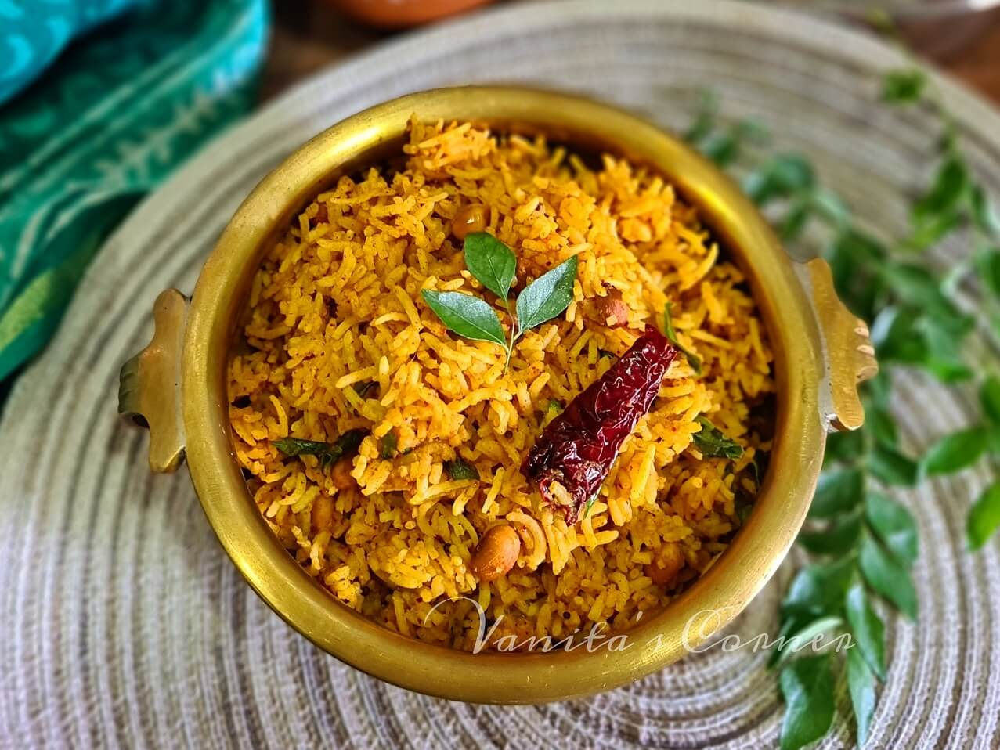

What is Puliyogare?
Puliyogare, also known as Tamarind Rice, is a popular South Indian dish made with tamarind and rice. It is a traditional dish in both Karnataka and Tamil Nadu, and it is difficult to pinpoint its exact place of origin as it is enjoyed in various regions of South India.
Word Puliyogare etymologically is composed of two Halegannada words (Medieval Kannada) Puli (ಪುಳಿ) and Ogare ( ಒಗರೆ) . Puli means Sour or Tamarind Juice. Ogare means seasoned Rice or cooked Rice preparation.
Just walk through the following steps and be surprised to end up with a bowl full of Lip smacking Puliyogare that serves 4

So lets get Started
Ingredients
- Rice - 2 cups
- Gingelly Oil
- Tamarind - 1 large apple size
- Dry red chillies - 10
- Channa Dal/Kadalai Parappu 1/2 cup
- Peanuts - 1/2 cup
- Urad Dal - 1/4 cup
- Curry Leaves - 2 big handful
- Asafoetida - 1 tsp
- Water - 2 cups
- Salt to taste
Additional Ingredients for Powder Preparation
- Oil 1 tsp
- Dry Red Chillies - 20
- Fenugreek Seeds - 1 tsp
Instructions
- Cook rice as you do as usual.
- Take tamarind and soak it in water for 15 mins. Squeeze and extract as much juice as possible. Discard the pulp.
- Heat 1 tsp of oil in a pan, dry roast chillies and fenugreek seeds on low heat. Now take this in a blender and powder them.
- Now heat gingelly oil in a kadai. Add in peanut, chana dal and fry till golden.
- Now heat gingelly oil in a kadai. Add in peanut, chana dal and fry till golden.
- Add in dry red chillies and fry for a min.
- Add in tamarind water and cook that down till it thickens.
- Now add in the spice powders and salt and mix well. Cook till it gets pretty dry and oil separates from it.
- Now you can cool this down and store it in a air tight container in fridge.
- When you need. Mix this in some cooked rice and toss well. Add salt to taste
- Serve.
Go back to home page